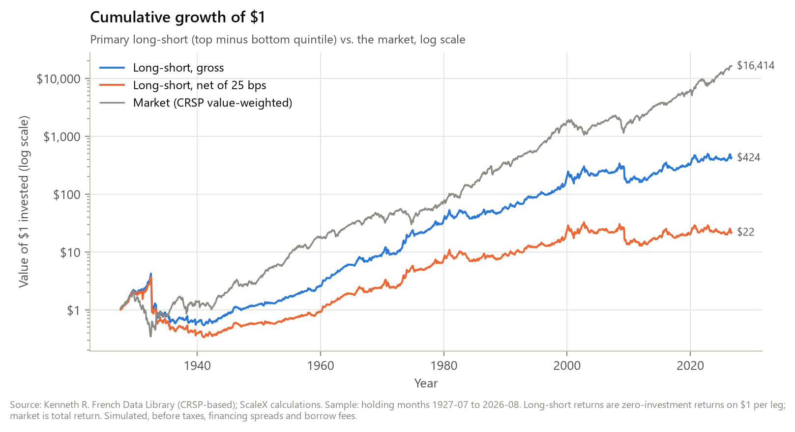
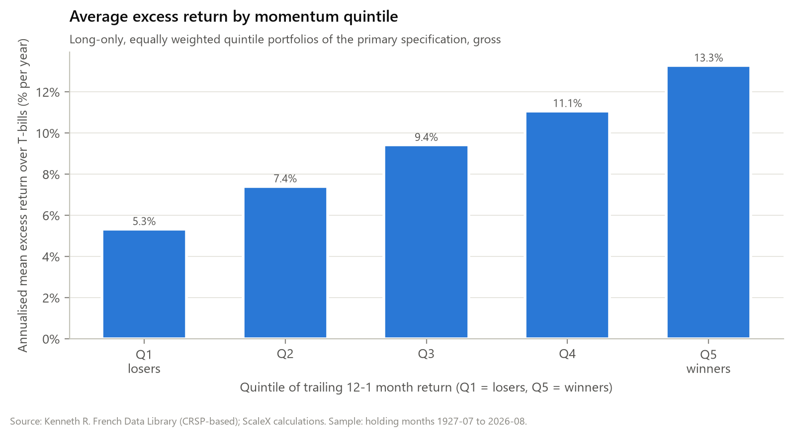
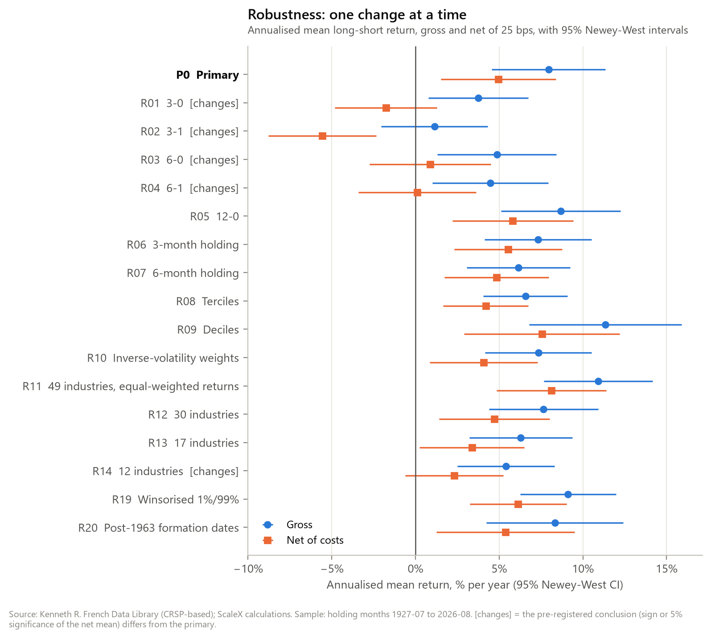
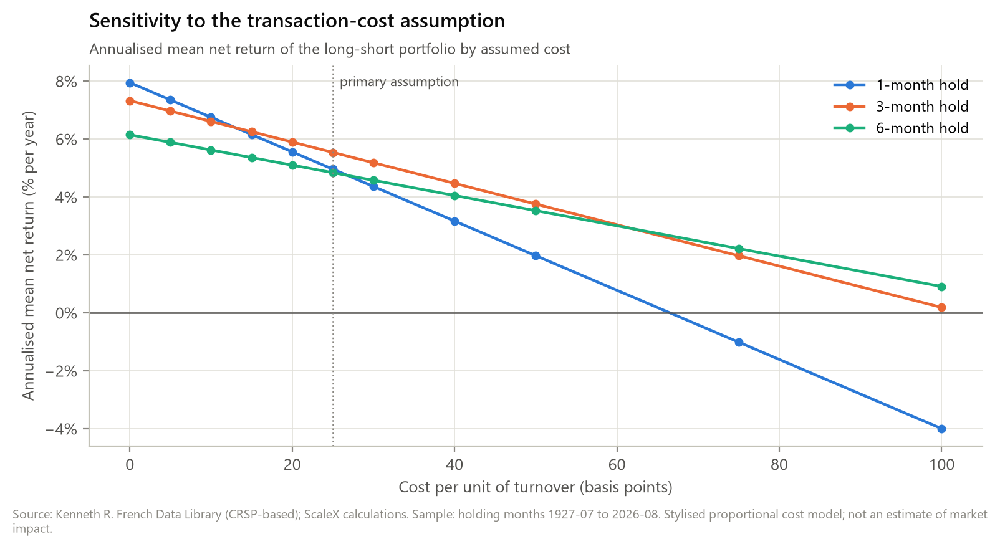

Research only. This publication is for research and educational purposes. It is not investment advice, an offer, or a recommendation. All returns are simulated from historical data under stated assumptions. Simulated past results do not guarantee future performance, and the assumptions and limitations below materially affect the conclusions.
Abstract
We test a classical cross-sectional momentum signal on the 49 US industry portfolios of the Kenneth R. French Data Library, with holding months from July 1927 to August 2026 (1,190 months). The signal is the 12-month return skipping the latest month; the portfolio is long the top quintile and short the bottom quintile, rebalanced monthly. We fixed the specification, 20 one-at-a-time variations, the statistical tests and a decision rule in writing before computing any result.
Before costs, the long-short portfolio earned 7.95% a year (Newey-West t = 4.59). After an assumed 25 bps per unit of turnover it earned 4.96% (t = 2.83). Corrected for testing 21 specifications, the net result is not significant at 5% (Holm-adjusted p = 0.052).
The gross effect is significant in 15 of 16 non-cost variations. The net effect disappears with 3- and 6-month lookbacks, with the coarsest industry universe, and at costs above about 67 bps. It is absent after market declines.
Pre-registered verdict: partially robust. The primary net result is positive and significant at the single-test level, and positive in all three subperiods. But only 11 of 16 non-cost variations leave the conclusion unchanged, short of the 12 required.
Research question
Does a simple cross-sectional momentum signal remain statistically and economically meaningful when we vary universe construction, ranking methodology, portfolio formation, transaction costs, holding period and other implementation choices? We do not ask whether momentum exists. We measure how much the answer depends on choices a reasonable researcher might make differently.
Primary result
| Portfolio | Ann. mean | HAC t | Sharpe [95% CI] | Max drawdown |
|---|---|---|---|---|
| Long-short, gross | 7.95% | 4.59 | 0.45 [0.23, 0.71] | −87.3% |
| Long-short, net of 25 bps | 4.96% | 2.83 | 0.28 [0.08, 0.51] | −91.0% |
| Market (CRSP value-weighted), excess of T-bill | 8.27% | 4.33 | 0.45 | −83.7% |
Holding months 1927-07 to 2026-08. Newey-West standard errors (6 lags). Sharpe intervals from a stationary block bootstrap. Average turnover is 1.00 per month (sum of absolute weight changes across both legs); at 25 bps this costs 2.99% a year.


Robustness: one change at a time
| Variation | Gross (t) | Net (t) | Holm p (net) | Conclusion changes? |
|---|---|---|---|---|
| Primary: 12-1, quintiles, 1-month, 49 ind. | 7.95% (4.59) | 4.96% (2.83) | 0.052 | – |
| Signal 3-0 | 3.76% (2.47) | −1.76% (−1.13) | 1.000 | yes |
| Signal 3-1 | 1.14% (0.70) | −5.56% (−3.38) | 0.012 | yes |
| Signal 6-0 | 4.86% (2.68) | 0.87% (0.47) | 1.000 | yes |
| Signal 6-1 | 4.47% (2.53) | 0.11% (0.06) | 1.000 | yes |
| Signal 12-0 | 8.68% (4.78) | 5.81% (3.15) | 0.021 | no |
| 3-month holding | 7.32% (4.49) | 5.54% (3.36) | 0.012 | no |
| 6-month holding | 6.15% (3.90) | 4.84% (3.04) | 0.028 | no |
| Terciles | 6.56% (5.12) | 4.20% (3.24) | 0.018 | no |
| Deciles | 11.34% (4.87) | 7.55% (3.18) | 0.021 | no |
| Inverse-volatility weights | 7.34% (4.52) | 4.08% (2.48) | 0.104 | no |
| 49 industries, equal-weighted returns | 10.92% (6.59) | 8.11% (4.85) | <0.001 | no |
| 30 industries | 7.65% (4.59) | 4.72% (2.80) | 0.052 | no |
| 17 industries | 6.29% (4.01) | 3.37% (2.12) | 0.205 | no |
| 12 industries | 5.40% (3.67) | 2.31% (1.54) | 0.616 | yes |
| Cost 10 bps | 7.95% (4.59) | 6.75% (3.88) | 0.002 | no |
| Cost 50 bps | 7.95% (4.59) | 1.97% (1.11) | 1.000 | yes |
| Cost 100 bps | 7.95% (4.59) | −4.00% (−2.19) | 0.200 | yes |
| Winsorised 1%/99% | 9.11% (6.24) | 6.13% (4.17) | 0.001 | no |
| Post-1963 formation dates | 8.32% (3.99) | 5.38% (2.56) | 0.095 | no |
Annualised means; HAC t-statistics in brackets. Net at 25 bps unless the row changes the cost (the 0 bps row equals gross and is omitted). "Conclusion changes" means the sign or the 5% significance of the net mean differs from the primary (rule fixed in advance; the pre-registered verdict counts only the 16 non-cost variations). Full table: results/tables/robustness.md.


Stability over time and market states
| Period / state at formation | Months | Gross | Net (t) |
|---|---|---|---|
| 1927-07 – 1960-07 | 397 | 6.40% | 3.29% (0.98) |
| 1960-08 – 1993-08 | 397 | 11.09% | 8.32% (3.30) |
| 1993-09 – 2026-08 | 396 | 6.34% | 3.27% (1.04) |
| After a 36-month market gain | 986 | 8.93% | 6.04% (3.95) |
| After a 36-month market loss | 180 | −1.54% | −5.15% (−0.70) |
| Low market volatility | 661 | 10.10% | 7.21% (4.42) |
| High market volatility | 470 | 2.21% | −0.94% (−0.26) |
Subperiods are three equal-length blocks, fixed in advance. States use only data available at the formation month.
What does not work
- Shorter lookbacks. The 3- and 6-month signals lose net significance; 3-1 loses money with confidence (−5.56% a year, t = −3.38).
- Multiple-testing correction. The primary net result does not survive it (Holm p = 0.052).
- Higher costs. At 50 bps the net effect is insignificant; at 100 bps it is significantly negative.
- Crashes. The worst month was −64.4% net, and the maximum drawdown −91.0%. Losses cluster after market declines, where the strategy earned nothing on average.
- Recent decades. The most recent third of the sample (1993–2026) is not individually significant net of costs.
Limitations
- Industries, not stocks. These are industry portfolios, not the individual stocks of the classical literature. Stock-level data (CRSP) are proprietary.
- Thin early industries. Several pre-1960 "industries" contain one or two firms. An exploratory filter excluding them leaves the result essentially unchanged (4.97% net, t = 3.01).
- Stylised costs. The cost model is a flat charge per dollar traded. It ignores market impact, short-sale constraints, borrow fees and the much higher costs of the early sample.
- Not out-of-sample. The sample overlaps the data on which momentum was discovered, so this is not independent evidence.
See the full limitations.
Reproduce
$ pip install -r requirements-lock.txt && pip install -e . --no-deps $ python scripts/download_data.py # French Data Library, not redistributed $ python scripts/run_experiment.py # every number in the note $ python scripts/generate_figures.py $ pytest # incl. look-ahead canaries
Documents
Cite
ScaleX Research (2026). Cross-Sectional Momentum Under Implementation Stress, v1.0.0. Code, data pipeline and results: see the GitHub repository above.